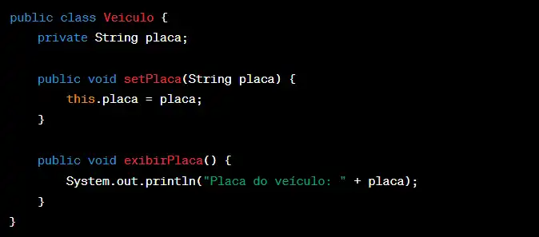
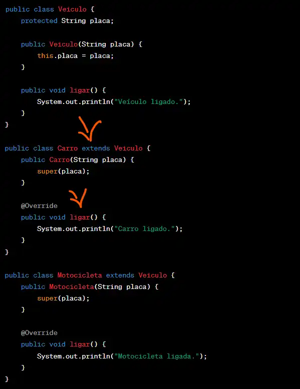
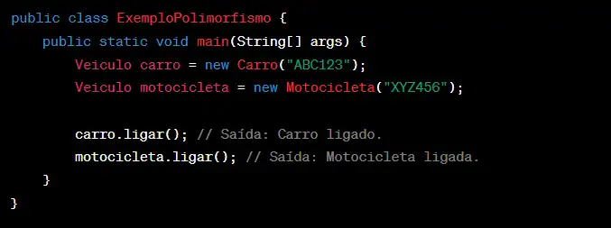
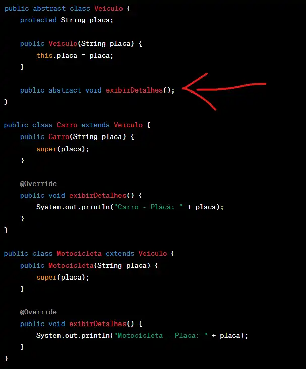

Pilares da Orientação a Objetos
Neste site, você encontrará informações básicas para começar a entender a POO, principalmente se estiver iniciando na área da programação.
Você terá tópicos como definição da POO, questões recorrentes e explicações de cada um dos pilares.
O que significa POO?
Os pilares da orientação a objetos são modos para estruturar a programação, vindo para revolucionar o desenvolvimento de software, introduzindo o conceito dos objetos como modelagem de sistemas.
Ele organiza o código em torno de objetos que são instâncias de classes. Esses objetos encapsulam dados (atributos) e comportamentos (métodos), e interagem entre si para realizar tarefas complexas.
Encapsulamento
Basicamente, é o processo de esconder todos os detalhes de um
objeto que não contribuem para as suas características essenciais.
Por exemplo, o modo como você freia o carro, é limitado, apenas
pisa no freio e ele para. Se fosse aberto esse sistema de controle,
poderia ser facilmente manipulado, causando erros não previstos.

Herança
A Herança possibilita o compartilhamento das classes para seus atributos, métodos e outros membros da classe. Ela possui dois tipos de classe, Classe Base e a Classe Derivada:
° Classe Base: Possui as características que as outras classes herdarão.
° Classe Derivada: Classe que herda as características da classe base.
Com essa herança de classes sendo transmitida, permite e assegura que os programas orientados a objetos cresçam de forma linear sem complexidade, não possuindo interações imprevisíveis pois já foram previamente herdadas. Uma classe derivada necessita apenas definir as características que a tornam única.
Exemplo: Uma classe base pode ser definida por classe Pessoa com os campos Nome e Idade. Já na classe derivada pode ser chamada de Funcionário com os campos salário e cargo.

Polimorfismo
O polimorfismo permite que um mesmo método possa ter diferentes comportamentos dependendo do objeto que o invoca. Por exemplo, imagine uma classe base chamada Animal com um método fazerSom(). Classes derivadas como Cachorro e Gato podem implementar esse método de maneiras diferentes.

Abstração
A abstração é implementada por meio de classes, que são modelos que descrevem os atributos e comportamentos comuns de um grupo de objetos.
Por exemplo, considere uma classe Carro. Neste exemplo, a classe Carro abstrai as características e comportamentos comuns a todos os carros, como marca, modelo, ano, e os métodos acelerar() e frear().

Analogias para Facilitar a Compreensão
Para o pilar do Encapsulamento, pode-se utilizar a analogia do carro, onde acelerar é colocado como um método e pode conter atributos (características) que contém outros métodos como o tanque de gasolina e o mecanismo de injeção de combustível.
Se alguns desses comportamentos e características ficarem visíveis, serão facilmente modificáveis, como o mecanismo de aceleração, dará certa liberdade e abertura para alterações, podendo resultar em erros imprevisíveis.
“Nessa analogia, uma pessoa pode não estar satisfeita com a aceleração do carro e modifica a forma como ela ocorre, criando efeitos colaterais que podem fazer o carro nem andar, por exemplo. Mas então, como sabemos como o nosso carro acelera? É simples: não sabemos.
Nós só sabemos que para acelerar, devemos pisar no acelerador e de resto o objeto sabe como executar essa ação sem expor como o faz. Dizemos que a aceleração do carro está encapsulada, pois sabemos o que ele vai fazer ao executarmos esse método, mas não sabemos como - e na verdade, não importa para o programa como o objeto o faz, só que ele o faça.
O mesmo vale para atributos. Por exemplo: não sabemos como o carro sabe qual velocidade mostrar no velocímetro ou como ele calcula sua velocidade, mas não precisamos saber como isso é feito. Só precisamos saber que ele vai nos dar a velocidade certa” (alura.com.br).
Já no pilar da Herança, imagine que você tem uma família onde os pais passam características para os filhos.
Por exemplo, se o pai tem olhos azuis e a mãe tem cabelo castanho, os filhos podem herdar essas características. Na POO, uma classe “pai” (superclasse) pode passar atributos e métodos para uma classe “filho” (subclasse). Assim, a subclasse herda as propriedades e comportamentos da superclasse.
Para o pilar Polimorfismo, imagine uma orquestra com diferentes instrumentos musicais, como piano, violino e flauta.Todos esses instrumentos têm um método comum chamado tocar(), mas cada um produz um som diferente quando esse método é chamado.
Na POO, o método tocar() é polimórfico porque, dependendo do instrumento (objeto) que o invoca, ele se comporta de maneira diferente.
Para o último pilar da Abstração, magine um mapa de uma cidade. O mapa não mostra cada detalhe, como todas as árvores ou cada pessoa andando nas ruas. Em vez disso, ele mostra apenas os elementos essenciais, como ruas, edifícios importantes e pontos de interesse. Na POO, a abstração funciona de maneira semelhante, focando apenas nos atributos e comportamentos essenciais de um objeto, ignorando os detalhes desnecessários.
Questões comuns e Respostas
1. O que é Programação Orientada a Objetos (POO)?
Resposta: POO é um paradigma de programação que utiliza “objetos” para representar dados e métodos. Esses objetos são instâncias de classes, que definem os atributos e comportamentos dos objetos.
2. O que é uma classe?
Resposta: Uma classe é um modelo ou blueprint que define as propriedades (atributos) e comportamentos (métodos) de um objeto. Por exemplo, uma classe Carro pode ter atributos como marca, modelo e ano, e métodos como acelerar() e frear().
3. O que é um objeto?
Resposta: Um objeto é uma instância de uma classe. Ele representa uma entidade específica com atributos e comportamentos definidos pela classe. Por exemplo, um objeto meuCarro da classe Carro pode ter marca = "Toyota" e modelo = "Corolla".
SAIBA MAIS!
https://www.alura.com.br/artigos/poo-programacao-orientada-a-objetos?srsltid=AfmBOopD3GexcUDkjQp1BIfwt5-VQLAK4PI6P5WJCekzHOCoGLfIW1PM">https://www.alura.com.br/artigos/poo-programacao-orientada-a-objetos?srsltid=AfmBOopD3GexcUDkjQp1BIfwt5-VQLAK4PI6P5WJCekzHOCoGLfIW1PM
https://www.youtube.com/watch?v=f-aDDLRmugU
https://www.devmedia.com.br/os-4-pilares-da-programacao-orientada-a-objetos/9264
https://meuartigo.brasilescola.uol.com.br/informatica/programacao-orientada-objetos.htm
https://academiatech.blog.br/o-que-e-programacao-orientada-a-objetos/